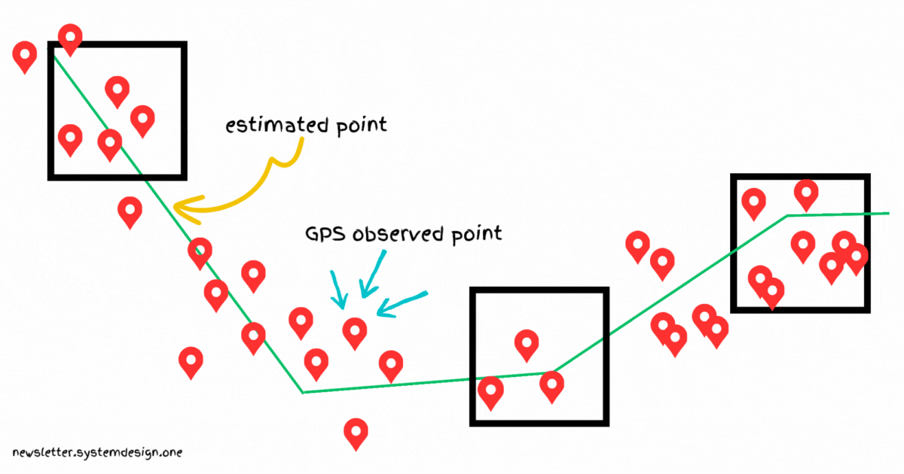

How Lyft Support Rides to 21 Million Users
#43: Break Into Lyft Architecture (11 minutes)

Get my system design playbook for FREE on newsletter signup:
This post outlines Lyft's architecture. If you want to learn more, scroll to the bottom and find the references.
Share this post & I'll send you some rewards for the referrals.
Note: This post is based on my research and might differ from real-world implementation.
Oliver is backpacking across Canada.
He has to reach the railway station in 25 minutes.
But couldn't find public transport from his place to the railway station.

So he uses a ride-sharing app called Lyft.

Interview Master (Featured)
Interview Master is a free 5-day crash course to crack technical interviews. After finishing the course, you also get a weekly coding challenge with its solution. You can also win a Google resume template and cheat sheets for DSA and System Design.
Lyft Engineering
Here’s a simplified version of Lyft’s architecture:
1. Map Data
Oliver adds his current location to the app.
They use OpenStreetMap (OSM) for internal map data. It gives a free and editable map of the world.
And use Google’s S2 library on top of OSM to efficiently index and query map data. S2 is based on the Geohash algorithm. It divides the map into grids called cells and gives each cell a unique ID.
Also they store road metadata and road segment sequences in each cell. It helps to understand turn restrictions on the road.

They let the client dynamically build a road network graph for low memory usage. This means the client downloads the S2 cells based on the user's location. Besides the client buffers nearby cells to have enough map data for navigation.

They store map data in serialized format on DynamoDB. And query the S2 geospatial index to find the relevant DynamoDB partition. The map data then gets downloaded from DynamoDB. The map data gets deserialized and filtered before returning it to the client.

Besides they run a CDN to cache the map data. It reduces latency and improves the reliability of the service.

Yet there’s a chance of duplicate download of map data by drivers. And it will increase network data usage. So they set up an SQLite database caching layer on the client. And update the in-memory cache only if the map data on the server changes.

Also there's a risk of missing data and errors in OSM. For example, new roads may be absent on maps and road directions could be wrongly labeled. So they use the Kalman filter to find missing roads. Weeks of driver location data is used to create a plot of missing roads and then update the map.
Think of the Kalman filter as a person who makes a correct guess about something's location. While the new and old information is taken into consideration for guessing.
2. Finding Nearby Drivers
Oliver searches for nearby drivers.
They store driver locations in a Redis cluster for scalability and low latency. A Redis cluster contains many Redis instances. This means driver locations are spread across many Redis instances. Thus preventing global write lock and contention issues when many rides get ordered at the same time.
But sharding Redis based on region causes a hot shard problem because of more drivers in big cities. So they use Google’s S2 library and divide the map into grids. And S2 is hierarchical. That means the cell size varies from square centimeters to square kilometers. They chose Geohash level 5 by default to find nearby drivers. It represents a square kilometer, so only a few cars will fit inside a single shard. And the hot shard problem wouldn't occur.

Redis cluster may contain drivers who stopped driving for the rest of the day. But they want only active drivers. This means drivers who are still driving during the day.
A simple approach is to create in-memory time buckets periodically. Then store the list of active drivers in it. And remove old buckets every 30 seconds. So only active drivers will stay in the latest bucket. Yet it results in constant allocation and freeing up of memory.

So they use a Redis sorted set in each Geohash to find nearby drivers. And store the last timestamp reported by the drivers in a sorted order. While inactive driver data is expired using the ZREMRANGEBYSCORE command. That means only data of those drivers who haven’t reported in the last 30 seconds will expire. Simply put, they overwrite memory instead of reallocating it. Imagine the sorted set as key-value pairs sorted by score.
Besides they store the driver location in a hash data structure. It's also queried to ensure that a driver doesn’t show up in 2 different Geohashes while driving through.
3. Matching Riders With a Driver
Oliver is shown a list of potential rides.
Yet they were expensive for his budget.
So he tried Lyft's feature called Line. It allows riders to share a single car at a low price.
But they must match only the riders with overlapping routes for efficiency.
A simple approach is to create a matching system based on time buckets. This means putting all the rider requests in a matching pool for a minute and then matching them. It increases the probability of a better match.

But the number of permutations of routes to calculate increases with number of riders sharing a single car. This means they must consider all riders in the system and predict future demand to find the best match. Put another way, it becomes a weighted maximal matching problem. For example, route ABCDBCDA would be a bad experience for rider A because it takes more time with many stops.

So they do route swapping. Think of route swapping as moving a rider from one route to another route before pickup. That means they re-match a rider if an efficient route has been found. Also it increases the matching window as they could look for a better route before pickup.
The above figure shows that rider A got swapped from route 1 to route 2 due to a lower trip time. Besides they accumulate the matched riders for around 30 seconds before checking for better routes. They do it to make the matching algorithm more efficient.
4. Finding the Rider’s Location
Oliver selects a ride.
But wants a short walking distance for pickup.
So he tries to set an accurate pickup spot on the app.

Yet Global Positioning System (GPS) isn’t reliable near tall buildings. Because the GPS signal might get reflected by a building and travel longer than it should. It’s called the multipath effect. This means triangle inequality and an incorrect position.

So they use a Wi-Fi map to solve this problem. For example, knowing that a rider was at a specific shop gives more context to their position. Wi-Fi is a group of radio technologies used for wireless local area networking (WLAN).
They create a map of Wi-Fi access points from past observations and use it to guess the rider's location. This means they infer a rider is near a shop if that shop's Wi-Fi signal is reachable by the rider's phone.
Besides they create 2 types of Wi-Fi maps: point estimate map and probability map.
They use the point estimate map to find the exact location of the Wi-Fi access points. But it's hard to find the rider's location only using the point estimate map. Because of Wi-Fi signal propagation and power loss with distance.
Also it makes sense to assume a continuity in probability on a 2D surface. So they create a probability map using the Gaussian process. Think of the Gaussian process as a statistical model defining distributions over functions.

Besides they make rider location more accurate using Baye’s theorem. It considers extra information like other Wi-Fi access points in the proximity. Imagine Baye’s theorem as a probability rule that updates current data based on new evidence and prior knowledge. In the figure above, the red marker represents the rider's position and Wi-Fi spots are known locations.
5. ETA Computation
Oliver is already in the car.
And wants to know the time to reach the railway station.
So he checks the estimated time of arrival (ETA) in the app.

They store the average speed from one Geohash to another in a hash table for fast lookup. And compute the ETA by dividing the haversine distance by the average speed. Imagine haversine distance as a formula to compute the shortest distance between 2 points on a sphere.
Yet there's a chance of inaccurate ETA during rush hour traffic. So they store the average speed for each hour of the day in a nested hash table and use it for ETA computation.

Also traffic control elements such as stop signs and traffic lights must be considered for an accurate ETA. Drivers have different speed patterns as they approach stop signs and traffic signals.
A typical driver slows down, stops the car, and then resumes driving upon approaching a stop sign. But a driver stops in front of a red traffic signal usually longer than in front of a stop sign. While the speed of a driver remains the same if there are no road signs or intersections.
So they run deep learning algorithms to predict the traffic control elements. Think of deep learning as a computational model imitating the human brain for advanced pattern recognition.

Besides they do map matching for an accurate ETA computation. Map matching is the process of mapping raw GPS signals to actual road segments.
They use the Kalman filter for map matching. It takes GPS signals and matches them to road segments. It’s a linear Gaussian model. That means a statistical model where relationships between variables are linear.
Also they use the Viterbi algorithm to find the most likely road segments. It's a dynamic programming approach.
Imagine the Viterbi algorithm as a person who figures out the correct story even if some words were spelled wrong. They do that by looking at the nearby words and fixing the mistakes so that the story makes more sense.
6. Lyft Architecture
Oliver reaches the railway station on time.
They run hundreds of microservices and over 40 API endpoints. They run Python and Golang programming languages on the backend. And use Protocol Buffers (Protobuf) for communication between services. It offers a simple language for API contracts and supports binary data format.

They run the envoy proxy as a sidecar process in the application server. This means the application server and envoy proxy talk to each other via a local UNIX socket. They use envoy proxy for edge communication and service-to-service communication.
Also they use the envoy mobile as a client proxy. It brings consistency between their app on different platforms like Android and iOS.
They rate limit both edge proxies and internal service mesh using a Redis cache. It uses a configuration file to set the rate limits.
Besides they run Apache Airflow for metrics aggregation and machine learning feature computation. Imagine Airflow as a platform for scheduling and managing data workflows.

Also they use the envoy proxy to route the requests to the Redis cluster. And use consistent hashing to find the proper Redis instance. So losing a Redis instance causes only 1/n data loss and also writes get more uniformly distributed.

It's possible to send many Redis commands at once without waiting for each response with Redis pipelining. It reduces latency but Redis handles them sequentially. This means they aren't executed concurrently.
So they set up concurrency at the application level. They hash Redis commands to proper Redis instances. The commands then get processed concurrently on Redis instances. And the result gets concatenated in the correct order before returning it to the client. That means many Redis instances execute the commands in parallel.
Besides they consider a Redis instance dead if it doesn’t respond to more than 3 requests. Thus guaranteeing high availability.
This architecture allowed them to scale to 21 million users.
And Lyft remains one of the main market players in the ride-hailing industry.
Consider subscribing to get simplified case studies delivered straight to your inbox:

Thank you for supporting this newsletter. Consider sharing this post with your friends and get rewards. Y’all are the best.


The visuals are getting better and better each week! Amazing work Neo.